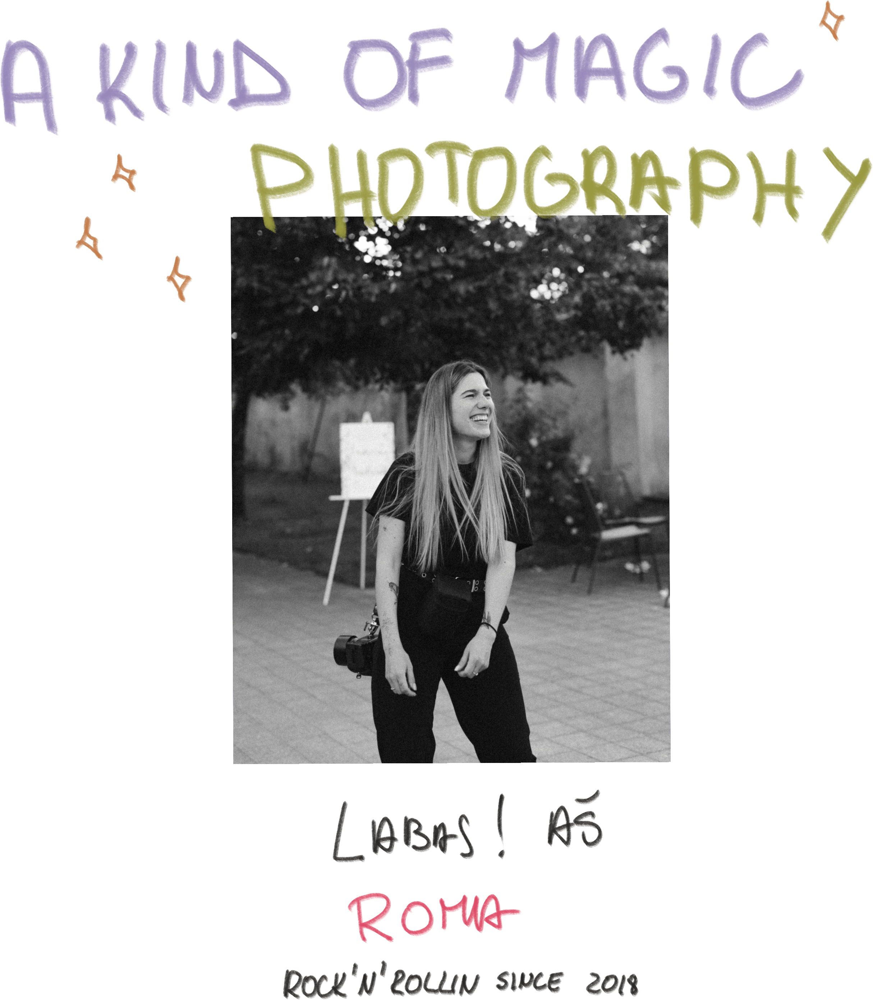

<div class="flex justify-content-center align-items-center">
  <div class="flex flex-column align-items-center justify-content-center">
    
    <p
      class="mt-4 text-center"
      [ngClass]="(isScreenSizeTabletOrMobile$ | async) ? 'w-9' : 'w-3'"
    >
      Didžiausia aistra – fotografuoti džiaugsmą, šypsenas ir tikrą gyvenimą. Ai
      ir dar bulvės! Man labai patinka bulvės!
    </p>
    <div
      class="mt-8 flex flex-column align-items-center justify-content-center"
    >
      <h1>Žvilgsnis į A Kind Of Magic Photography pasaulį</h1>
      @if (isScreenSizeMobile$ | async) {
        
      } @else {
        
      }
    </div>
    <div class="mt-8 relative inline-block flex justify-content-center">
      

      
    </div>

    <div class="mt-8">
      <h1 class="text-center">Ką kalba žmonės?</h1>

      <div class="relative inline-block flex justify-content-center">
        

        
      </div>
    </div>

    <div
      class="mt-8 flex flex-column align-items-center justify-content-center"
    >
      
      
    </div>
  </div>
</div>
